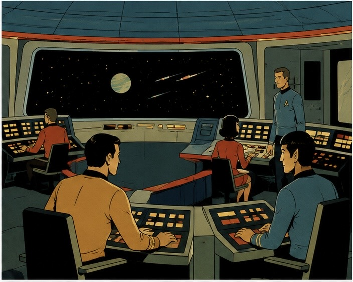

Somos la tripulación de la nave de investigación U.S.S. Odisea. Recibimos un llamado de auxilio: un equipo de científicos está varado en el planeta Artemisa VII, a 48 semanas de viaje. Cada semana es una aventura. El espacio es un quilombo: lleno de peligros, pero también de oportunidades.
La misión es clara: llegar con vida, juntar 15 puntos de Oro para el rescate y no perder a toda la tripulación en el camino.

Cada jugador elige un rol al arrancar la partida. Ese rol define qué le toca hacer a bordo. Si somos menos de 4 jugadores: cuando salga una carta de un palo sin dueño, decidimos entre todos qué hacer.
Consigue los recursos (Oro) para el rescate. Maneja el inventario.
Consigue mejoras para la nave (velocidad, escudos, agujeros de gusano).
Enfrenta o esquiva ataques y peligros. Sus puntos de táctica mejoran las tiradas de combate.
Genera avances científicos. Puede mejorar a otros roles o recuperar vidas.
Cada carta tiene un número (del 1 al 12) que define su nivel y su dificultad.
El jugador a cargo del palo decide si tira los dados o prefiere no arriesgarse. Si decide tirar, usa:
Éxito: la suma es igual o mayor al número de la carta. · Fracaso: la suma es menor al número de la carta.
Cuando fallás una carta de Peligro (8 o 9), la nave queda con una avería. Ponés 2 fichas ✕ sobre ese palo.
Las próximas 2 veces que salga una carta de ese mismo palo (cualquier número), el turno se pierde automáticamente: no se tira nada, no se gana nada, y se saca una ficha.
Cuando sacás las 2 fichas, la nave ya está reparada y el palo vuelve a funcionar normal.
Cada acierto en una Oportunidad de Espadas (1–7) da puntos de táctica.
Cada 4 puntos acumulados dan un bono permanente de +2 a todas las tiradas de Conflicto Mayor (10–12).
Cada acierto en una Oportunidad de Copas (1–7) da puntos de ciencia. Se usan cuando quieras:
+2 a cualquier tirada de Oros, Bastos o Espadas (4 puntos por cada +2).
Recuperar 1 Vida gastando 8 puntos.
Refuerzo del Motor (Basto 7): escapás automáticamente de un Peligro o Conflicto Mayor, sin tirar ni perder nada.
Agujero de Gusano (Basto 6): retirá 2 cartas al azar del mazo restante, acortando el viaje en 2 semanas.
El Diario de Abordo de la U.S.S. Odisea, en criollo. Cada carta es un capítulo de nuestra odisea espacial.
El oro es el alma de la misión. En las oportunidades de Oros (1 a 7), si tenés éxito, ganás exactamente la cantidad de Oros que dice el número de la carta.
La nave es tu casa y tu herramienta. Una buena ingeniería te hace llegar temprano o no llegar nunca.
El espacio está lleno de amenazas. Tus reflejos y tu estrategia son el escudo de toda la tripulación.
La ciencia es la clave del futuro. Tus descubrimientos pueden curar o darle una ventaja enorme a la nave.